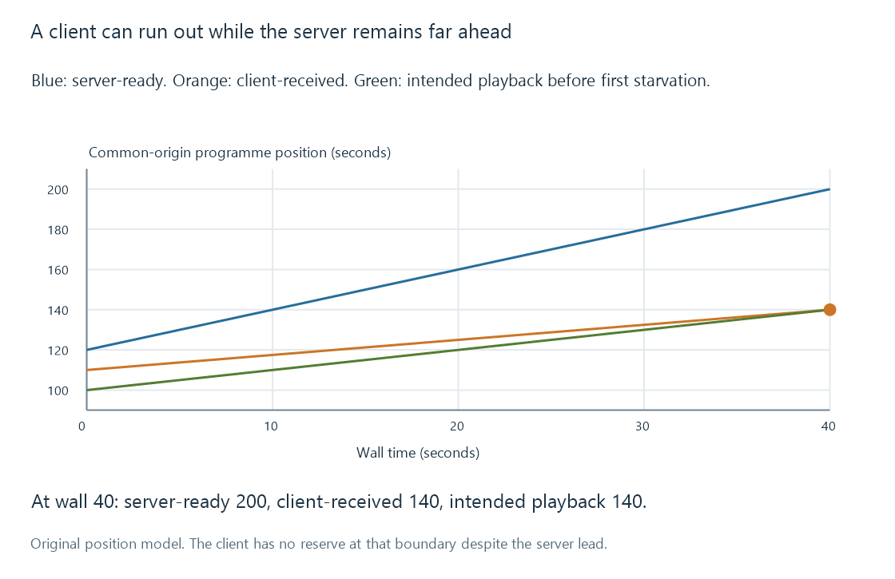

Playback stalls and unavailable next media
A playback stall occurs when the next required presentation cannot progress because media or another dependency is not ready, requiring evidence from the affected stage.
A stall is a failure to make the next required playback progress when it should occur. The missing dependency can be media arrival, server output, resource access, decoder readiness or another part of the path.
A waiting indicator describes the player's state. It does not identify the cause by itself.
Three positions can tell different stories
Use an original common-origin model:
server-ready position = 120 + 2 × wall seconds
client-received position = 110 + 0.75 × wall seconds
intended playback position = 100 + 1 × wall seconds
At the start, the client has ten media seconds ahead of playback. The server's output progresses quickly, but the client's arrivals progress at only 0.75x.
At wall second 40, received and intended playback positions both reach programme second 140. The client has exhausted the stated reserve while the server-ready position is already 200.

The model ends at that first starvation point. Afterward, uninterrupted intended playback cannot continue under the assumptions; a real player must wait or apply another recovery policy.
The server-ready value is not proof of client receipt. Nor does client receipt guarantee a decoded picture's presentation deadline.
Locate the missing dependency
| Observation | Useful question |
|---|---|
| Server output stops advancing while active work is required | Is production blocked, failing or too slow? |
| Server output advances but arrivals do not | Which retrieval/delivery dependency is holding up the client? |
| Received media is present but presentation cannot progress | Is decoding, output initialization or another player dependency unresolved? |
| Sound continues but pictures are visibly uneven | Are pictures missing presentation deadlines rather than the whole playhead waiting? |
The last case can be dropped video frames, a different observation from an exhausted continuous media reserve.
A source-read interruption can eventually propagate through several queues. The visible symptom can occur later than the original failure because earlier buffers temporarily cover the gap.
Recovery introduces another interval
A player can wait for reserve, retry retrieval, select another representation or stop with an error. Those behaviors have different evidence and policies.
Changing to a lower output rate can reduce delivery demand. It cannot correct a missing resource or automatically repair corrupt input. Changing server conversion speed cannot establish that a client's current route can carry the chosen output.
An intentional pause in playback and a deliberate producer throttle also differ from a stall. Their state and positions should be retained in the observation record.
Compare the same session context
Source, tracks, app, requested position and competing activity all influence the path. A successful test with different subtitles or another source is not the same workload.
The original plot isolates one cause: slower client arrival than consumption despite faster server production. A real example needs the relevant position/rate observations before that explanation can be assigned.
See Also
- Buffering, ready media and playback reserve
- Real-time transcoding and playback deadlines
- Dropped video frames during playback
- Playback error categories and evidence scopes
- Reading Emby playback information